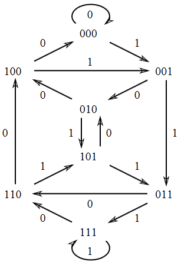

一个 $n$ 元 $k$ 阶 de Bruijn cycle 是由 $n$ 种字符组成的长度为 $n^k$ 的环，满足每连续 $k$ 个字符恰出现 $n^k$ 种可能各一次.
本文将给出本质不同的 $n$ 元 $k$ 阶 de Bruijn cycle 数量公式.
构造有向图 $G(n,k)=(V,E)$ .
$V=[n]^{k-1}$ ，即 $n^{k-1}$ 个结点，每个结点对应由 $n$ 个字符组成的所有长度为 $k-1$ 的字符串.
$E=\{(u,v)|\exists x,y\in [n]:x+u=v+y\}$ ，这里的 $+$ 是字符串连接. 即 $G$ 中有从 $u$ 到 $v$ 的边，当且仅当存在长度为 $k$ 的字符串，其后 $k-1$ 位为 $u$ ，前 $k-1$ 位为 $v$ .
如下图即 $G(2,4)$ ：

$n$ 元 $k$ 阶 de Bruijn cycle 与 $G(n,k)$ 的欧拉回路一一对应.
具体来说，欧拉回路依次经过的边就对应着 de Bruijn cycle 上依次排列的连续 $k$ 个字符.
根据 BEST 定理 ， $G(n,k)$ 的欧拉回路数为
$$EC(G)=\det L_{G}^{[-1]} \prod_{v\in V}(\deg v-1)!$$
，其中 $\det L_G^{[-1]}$ 为 $G$ 的 Laplace 矩阵 $L_G$ 删去任意一个结点 $v$ 对应的行和列后的余子式.
观察到：
(1) 在 $G(n,k)$ 中显然有 $\forall v\in V:\deg v=n$ .
(2) 记 Laplace 矩阵 $L_G=nI-A_G$ 的特征值为 $\gamma_1\le \gamma_2\le …\le \gamma_{n^{k-1}}$ ，
$$n^{k-1}\det L_G^{[-1]}=\sum_{v\in V}\det L_G^{[-v]}=-\det(L_G-tI)[t]\\
=(-\prod_{i=1}^{n^{k-1}}(\gamma_i-t))[t]=\prod_{i=2}^{n^{k-1}}\gamma_i(\gamma_1=0)$$
事实上，在无向图中，总有 $\det L_G^{[-1]}=\cfrac{\prod_{i=2}^{|V|}\gamma_i}{|V|}$ 成立. 这也被认为是另一种形式的矩阵树定理.
(3) $\forall u,v\in V$ ， $G$ 中有经过恰 $k-1$ 条边从 $u$ 到 $v$ 的唯一方式：
$$u\rightarrow u[2…n]+v[1]\rightarrow u[3…n]+v[1…2]\rightarrow …\rightarrow u[n]+v[1…(n-1)]\rightarrow v$$
故 $A_G^{k-1}=\mathbf 1\cdot\mathbf 1^T$ ，其特征值为 $\lambda_1=n^{k-1},\lambda_2=\lambda_3=…=\lambda_{n^{k-1}}=0$ .
故可知 $A_G$ 的特征值为 $\lambda_1=n,\lambda_2=\lambda_3=…\lambda_{n^{k-1}}=0$ ；
$L_G$ 的特征值为 $\gamma_1=0,\gamma_2=\gamma_3=…=\gamma_{n^{k-1}}=n$ .
综上所述，
$$EC(G)=\cfrac{\prod_{i=2}^{n^{k-1}}\gamma_i }{n^{k-1}}\cdot \prod_{v\in V}(\deg v-1)!=n^{n^{k-1}-k}\cdot [(n-1)!]^{n^{k-1}}=\cfrac {(n!)^{n^{k-1}}}{n^k}$$
故本质不同的 $n$ 元 $k$ 阶 de Bruijn cycle 有 $\cfrac{(n!)^{n^{k-1}}}{n^k}$ 种.
Reference
https://pi.math.cornell.edu/~levine/18.312/alg-comb-lecture-19.pdf
https://pi.math.cornell.edu/~levine/18.312/alg-comb-lecture-21.pdf